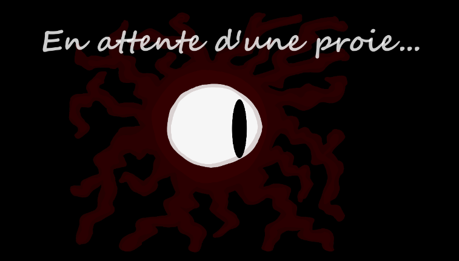
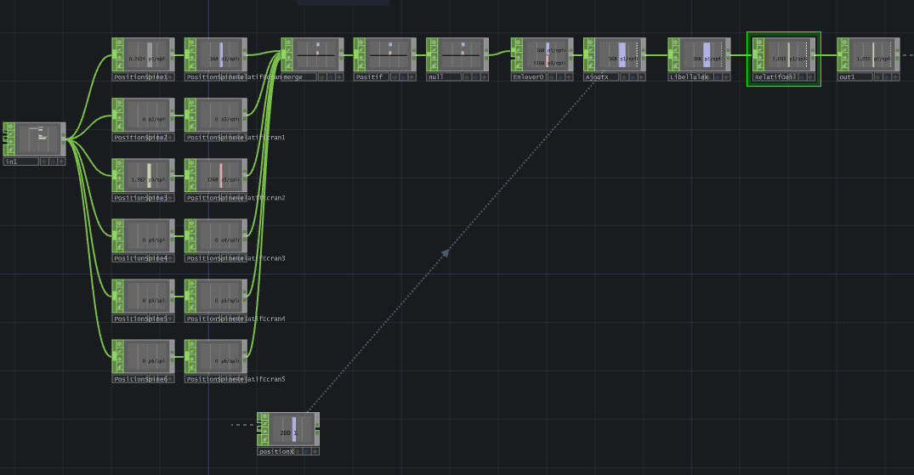
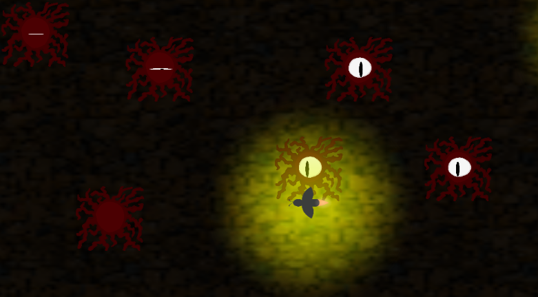

Premièrement, il fallait que je crée l'identité de mon projet, je voulais faire un projet un peu effrayant car c'est quelque chose qu'on voit très rarement sur les murales intéractives. C'est comme cela que j'ai eu l'idée de mon projet !

Deuxièmement, il fallait que je m'occupe du prototypage du projet, j'ai eu de la difficulté surtout lorsqu'il fallait que je programme le fait que chaque yeux regarde la libellule la plus proche, mais j'ai réussi tout de même.

Finalement, j'ai pu enfin faire marcher le prototype final, après environ 12h de travail. Je suis quand même assez fier du résultat et j'espère que vous aimeriez celui-ci.